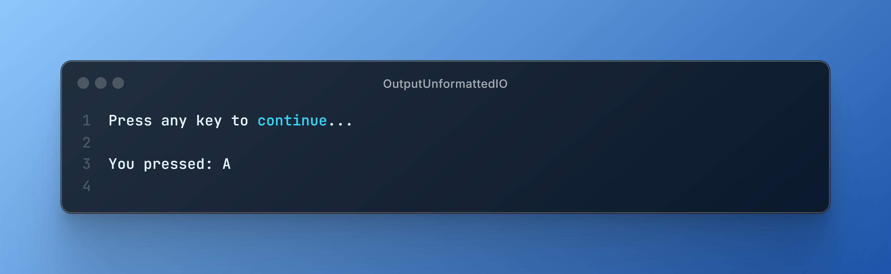
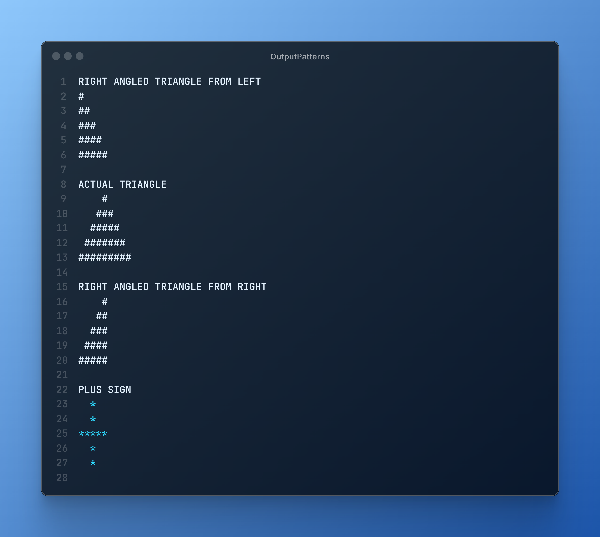

Introduction to C
C is a powerful, low-level programming language that has been the backbone of modern computing for decades. Known for its efficiency and control over system resources, it remains a favorite for operating systems, embedded systems, and performance-critical applications. Whether you're a beginner or an experienced coder, mastering C opens doors to deeper programming insights.
In this blog, we'll cover the following:
- Preprocessor Directives
- Tokens in C
- Formatted I/O Functions
- Unformatted I/O Functions
- Control Flow
- Arrays
- Array Operations
- Pattern Printing
- String Handling Functions
1. Types of pre-processor directives
Preprocessor directives in C are commands that begin with # and are processed before compilation. They handle tasks like including files (#include), defining macros (#define), and conditional compilation (#ifdef, #ifndef). These directives help in code modularity, reusability, and conditional compilation, making programs more flexible and efficient.
Example:
Output:
2. Tokens in C
Tokens in C are the smallest individual units of a program, serving as the building blocks for writing code. They include keywords (like int, return), identifiers (variable names), constants (numeric or character values), operators (like +, -, *), and punctuation symbols (like ;, {}, []). Understanding tokens is essential for parsing and compiling C programs, as they define the structure and meaning of the code. Each token plays a specific role in the syntax and semantics of the language, enabling developers to create functional programs.
Example:
Output:
3. Formatted I/O Functions
Formatted I/O functions in C, such as printf() and scanf(), are essential for handling input and output operations with specific formatting. These functions allow you to control how data is displayed or read, using format specifiers like %d for integers, %f for floating-point numbers, and %s for strings. For example, printf("Value: %d", value) prints an integer with a label, while scanf("%d", &value) reads an integer from user input. These functions are crucial for creating user-friendly interfaces and ensuring data is presented in a clear and organized manner.
Example:
Output:
4. Unformatted I/O Functions
Unformatted I/O functions in C, such as getch(), getche(), getchar(), puts(), and gets(), are used for reading and writing data without specific formatting. These functions are particularly useful for handling character input and output directly. For instance, getch() reads a single character from the keyboard without echoing it to the screen, while puts() outputs a string followed by a newline. These functions are often used in scenarios where simple input/output operations are needed, such as in console applications or when dealing with character-based data.
Example:
Output:
5. Control Flow
Control flow in C determines the execution order of statements in a program. The switch-case statement is used for multi-way branching, where a variable is compared against multiple case values, executing the matching block (e.g., switch(choice) { case 1: printf("One"); break; }). It is useful when handling multiple conditions efficiently. The goto statement allows jumping to a labeled part of the code (goto label;), which can sometimes simplify loops or error handling but is generally discouraged due to reduced readability and maintainability. Both provide ways to control program execution based on conditions.
Example:

Output:

6. Arrays
In C, an array is a collection of variables of the same type, stored in contiguous memory locations. You can think of it as a way to group multiple variables under a single name, and you access each element using an index. Arrays are useful for storing and manipulating large sets of data efficiently, like a list of numbers or characters. They provide a simple and powerful way to work with data structures in C.
Example:
Output:
7. Array Operations
In C, array operations are fundamental for manipulating collections of data. Common operations include traversing arrays to access or modify elements, searching for specific values using algorithms like linear or binary search, and sorting arrays using techniques such as bubble sort or quicksort. These operations are essential for efficiently managing data in various applications, from simple programs to complex algorithms. Mastering array operations is crucial for 11th-grade exams, as they form the basis for understanding more advanced data structures and algorithms in C programming.
Example:

Output:
8. Transpose of an Array
In C, the transpose of a matrix is a fundamental operation that involves flipping the matrix over its diagonal, effectively swapping rows and columns. This operation is crucial in various applications, such as image processing and linear algebra. To compute the transpose, you typically create a new matrix where the element at position (i, j) in the original matrix becomes the element at position (j, i) in the transposed matrix. Understanding how to implement this operation is essential for 11th-grade exams, as it demonstrates proficiency in array manipulation and algorithm design.
Example:
Output:
9. Patterns
In C, creating patterns is a common practice for students to improve their understanding of loops, conditionals, and array manipulation. Patterns often involve using nested loops (for rows and columns) to print specific sequences of characters or numbers, and this is a vital skill for your 11th-grade exams.
Example:
Output:
10. String Handling Functions
In C, string handling functions are essential for manipulating and processing strings, which are arrays of characters. These functions include operations like finding the length of a string (strlen), copying one string to another (strcpy), concatenating two strings (strcat), comparing two strings (strcmp), and searching for a character within a string (strchr). Understanding these functions is crucial for efficiently working with text data in C programs, especially in the context of 11th-grade exams where string manipulation is a common topic.
Example:

Output: